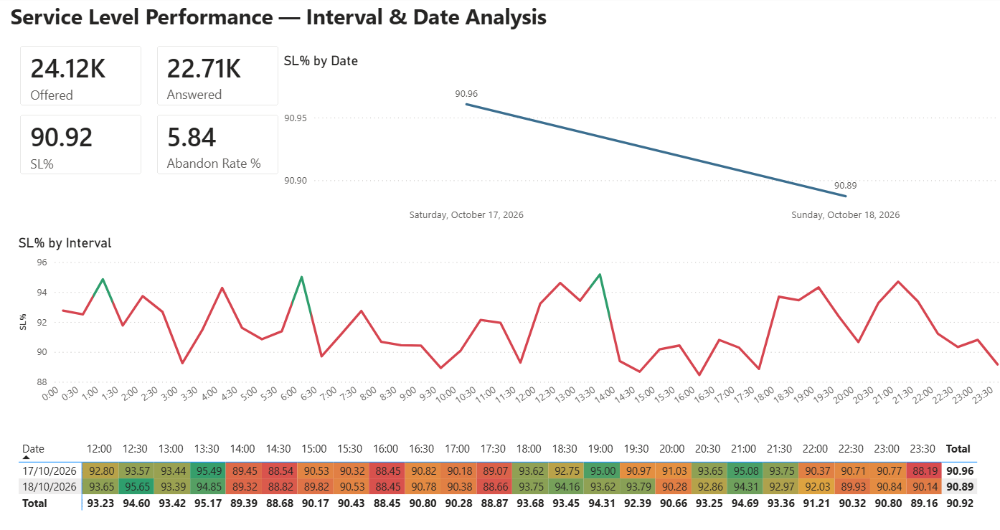
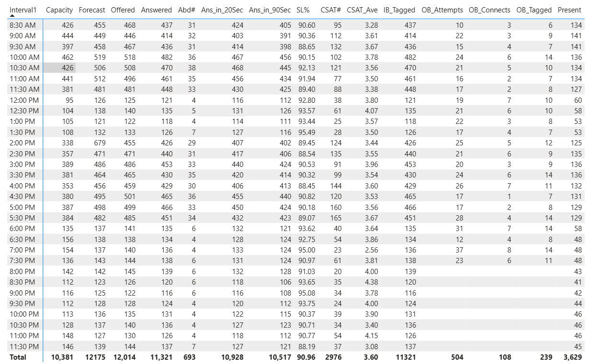

Projects covering Power BI reports, SQL data models, scheduled pipelines on Microsoft Fabric, and AI assistants that query data or update planned numbers.
Each area below is covered by one of the projects on this page.
Power BI reports and semantic models with DAX measures, drill-downs and matrices showing metrics by day and by 30-minute interval.
See the Fabric report →T-SQL, Power Query and star-schema modelling, with row-count, date and orphan-record checks in the SQL layer.
See the SQL layer →Service level (80/20, 90/60), abandon rate, AHT, hold, ACW, forecast vs offered, shrinkage and agent productivity across voice, chat and email.
See the original report →Fabric pipelines, Power Automate, VBA and scheduled refresh in place of manual daily reports. One refresh-and-email job ran in 10 minutes.
See the automation →A Fabric Data Agent answers questions on the data. A Copilot Studio agent updates planned numbers through a stored procedure with validation and an audit log.
See the agents →Moving Excel, Access and VBA workbooks onto Fabric while keeping the existing KPI definitions.
See before and after →The Fabric rebuild, the original report it is based on, and other projects.
A rebuild of my Excel, Access and VBA performance report on Microsoft Fabric. Raw contact-centre dumps load through pipelines, are transformed in SQL and feed one semantic model. Users can ask questions of the data or change a forecast through chat, and the change appears in the report.
All data shown is synthetic.


A recreated layout of one tab, the 30-minute interval view by queue. The numbers are synthetic; the real report is internal and is not shown.
| Interval | Forecast | Capacity | Offer | Answer | O2F% | A2F% |
|---|---|---|---|---|---|---|
| 08:00 | 462 | 440 | 493 | 447 | 107% | 97% |
| 08:30 | 392 | 350 | 459 | 448 | 117% | 114% |
| 09:00 | 473 | 427 | 532 | 514 | 112% | 109% |
| 09:30 | 389 | 351 | 430 | 399 | 111% | 103% |
| 10:00 | 397 | 398 | 350 | 310 | 88% | 78% |
| 10:30 | 488 | 443 | 449 | 430 | 92% | 88% |
| 11:00 | 541 | 496 | 572 | 564 | 106% | 104% |
| 11:30 | 436 | 387 | 400 | 377 | 92% | 86% |
| 12:00 | 487 | 463 | 555 | 543 | 114% | 111% |
| 12:30 | 526 | 544 | 502 | 491 | 95% | 93% |
| 13:00 | 528 | 516 | 553 | 542 | 105% | 103% |
| 13:30 | 520 | 476 | 465 | 421 | 89% | 81% |
| Excel, Access, VBA | Fabric, SQL, Power BI | |
|---|---|---|
| Data loading | Cisco dumps pasted or loaded by hand | Pipelines load raw files on a schedule |
| Logic | Formulas, macros and pivots spread over about 24 tabs | One SQL layer, one semantic model |
| Refresh | Run macros, then email the file | Scheduled refresh, report always current |
| Viewing | Scroll tabs, rebuild pivots | Heat-map matrices, filters, drill-down |
| Changing a plan | Edit cells in the file | Ask the agent; validated and audited |
| Asking a question | Ask the analyst | Ask the data agent in plain English |
The original report that the Fabric project rebuilds. I designed and ran it for a large telecom contact centre. Two raw dumps went in: Cisco service-level data by call queue and 30-minute interval, and an agent productivity dump. One workbook came out with views for every level of the operation.
The report refreshed with VBA and Power Pivot, visualised the trends and emailed them to operations leaders. 10 GB of trends refreshed and emailed in 10 minutes.
Field Service Tracker, stock management and order tracking apps that write back to Fabric, replacing repeated manual data entry with validated forms and one reporting source.
The chat assistant on this page answers questions about these projects. Each conversation is logged through Cloudflare, an Azure Function and a Fabric Eventhouse into a real-time Power BI report.
A conversational assistant grounded on Fabric data, surfaced in Teams and Power Pages so teams get self-service answers without waiting for an analyst.
Pipeline from public RBNZ and MBIE datasets to a Power BI report covering housing, labour, OCR and fuel over 20+ years. Published on LinkedIn.
Loops through emails and attachments and extracts date, order number, customer details and line items straight into Excel, with no manual entry.
Low-stock alerting and supplier re-order emails triggered automatically for fast-moving SKUs.
Tools used across these projects.